'കടൽ ഒറ്റയ്ക്ക്് ക്ഷണിിച്ചപ്പോƀോൾ' എന്ന യാാത്രാാവിിവരണത്തിിൽ സമുുദ്രങ്ങളെയുംംc വൻകരകളെയുംംc
പിിന്നിട്ട യാാത്രാാനുുഭവങ്ങൾ കമാാൻഡർ അഭിലാാഷ്് ടോ�ോമി നമ്മോോƣോട് പങ്കുുവയ്ക്കുകയാാണ്്. ഇന്ത്യയൻ
നാാവിികസേ�നയു
ുടെെ 'മാാദേയി' എന്ന പാായ്ക്കപ്പലിൽ ഒറ്റയ്ക്ക്്, ഒരിടത്തുംംc നിർത്താാതെെ
, ലോ�ോകംം
ചുുറ്റിവന്ന ആദ്യ ഇന്ത്യയക്കാാരനുംംc മലയാാളിയുമാാണ് അദ്ദേŔഹംം. സമുുദ്രങ്ങളിൽനിന്നുംംc സമുുദ്ര
ങ്ങളിലേ�ക്ക്് യാാത്രചെ�യ്തപ്പോƀോൾ വിിശാാലമാായ ഭൂമുുഖത്ത്, തനതുുസവിിശേ�ഷത
കളോോോടെെ കരകൾ
എങ്ങനെ� വ്യാാ�പിിച്ചു കിടക്കുന്നുവെ�ന്നുംംc അവയെ�ല്ലാംDZ എത്രത്തോ�
ോളംം പരസ്പര ബന്ധിിതമാാണെ�ന്നുംംc
അദ്ദേŔഹംം ഈ പുസ്തകത്തിിൽ വിിവരിിക്കുന്നുണ്ട്്. കമാാൻഡർ അഭിലാാഷ്് ടോ�ോമി ലോ�ോകംം ചുുറ്റിവന്നതു
പോ�ോലെ� നമുുക്കുംംc ഒരു ലോ�ോകസഞ്ചാാരംം നടത്തിിയാാലോ�ോ?
സമുുദ്രങ്ങൾക്കിടയിലാായിി സ്ഥിിതിചെ�യ്യുുന്ന അതിവിിശാാലമാായ കരഭാാഗങ്ങളാാണ് ഭൂഖണ്ഡങ്ങൾ.
മിക്ക ഭൂഖണ്ഡങ്ങളും�ം നിരവധിി രാാജ്യയങ്ങളെ ഉൾക്കൊ�ൊള്ളുുന്നവയാാണ്്. ഓരോ�ോ ഭൂഖണ്ഡത്തിിനുംംc
തനതാായ ഭൂമിശാാസ്ത്ര സവിിശേ�ഷത
കളുണ്ട്്. അവ നമുുക്ക് പരിിശോ�ോധിിച്ചാാലോ�ോ?
"ചരിിത്രത്തിിലേ�ക്ക്് പാായ്ക്ക
പ്പലോ�ോടിച്ച പോ�ോർച്ചുഗീസു
കാാർ നൂറ്റാാണ്ടുകൾക്കു മുുൻപ്
നങ്കൂരമിട്ട ഗോ�ോവൻ തീരങ്ങ
ളിലെ�, മീൻപിിടുത്തക്കാാരുടെെ
ഇഷ്ടദേവതയുുടെെ പേ�രാാണ്
്
മാാദേയി. ഞങ്ങളൊൊന്നിച്ച്
ഇന്ത്യയൻ മഹാാസമുുദ്രത്തിിൽ
നിന്ന് പസഫിിക്കുംംc അറ്റ് ലാാ
ന്റിിക്കുംംc കടന്ന്, ചരിിത്രംം തിര
യടിിക്കുന്ന മുുനമ്പുുകൾ പിി
ന്നിട്ട്, കാാറ്റിനുംംc തിരമാാല
കൾക്കുമിടയിലൂടെെ, ഒരി
ക്കലുംം
c പരസ്പരംം ഒറ്റയ്ക്കാാണെ�ന്ന്
് തോോോ
ന്നിപ്പിക്കാാതെെ കടലുംംc കാാലവുംംc ലോ�ോ
കവുംംc ചുുറ്റിവന്നു".
ഭൂൂഖണ്ഡങ്ങളിിലൂൂടെെ...
ഭൂൂഖണ്ഡങ്ങളിിലൂൂടെെ...
7
അവലംംബംം
അവലംംബംം - '
- 'കടൽ ഒറ്റയ്ക്ക്് ക്ഷണിിച്ചപ്പോƀോൾ'
കമാാൻഡർ അഭിലാാഷ്് ടോ�ോമി
Page 87

Page 88
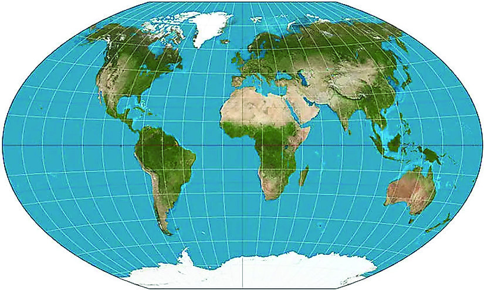


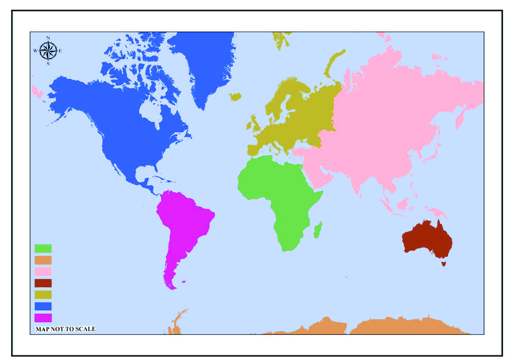
സാാമൂൂഹ്യയശാാസ്ത്രംം ക്ലാാസ്
സാാമൂൂഹ്യയശാാസ്ത്രംം ക്ലാാസ് VI
VI
88
ഭാാഗംം
ഭാാഗംം 1
ചുുവടെെ തന്നിരിക്കുന്ന ഭൂപടത്തിിൽ ഭൂഖണ്ഡങ്ങളുടെെ പേ�രു
ുകൾ
അടയാാളപ്പെെƀടുത്തൂ.
വലുപ്പത്തിിൽ ഒന്നാാമൻ
വലുപ്പത്തിിൽ ഒന്നാാമൻ
ഏഷ്യയാാണ്് ഏറ്റവുംംc വലിിയ ഭൂഖണ്ഡമെെന്ന്് നിങ്ങൾക്ക് അറിിയാാമല്ലോ�ോ. നമ്മുടെെ രാാജ്യയമാായ ഇന്ത്യയ
ഏഷ്യയുടെെ ഭാാഗമാാണ്. ഭൂമിയുടെെ കരഭാാഗത്തിിന്റെ� ഏതാാണ്ട്് മൂന്നിലൊ�ൊന്നുംംc ഉൾക്കൊ�ൊള്ളുുന്ന
ഭൂഖണ്ഡമാാണ് ഏഷ്യ.
അതിിരുുകൾ
കിഴക്ക്്
പടിഞ്ഞാാറ്്
വടക്ക്്
തെ�ക്ക്്
പസഫിിക് സമുുദ്രംം
യൂറോ�ോപ്പ്
ഭൂപടംം നിരീക്ഷിച്ച്, ഏഷ്യയുടെെ അതിരുകൾ കണ്ടെ�ത്തിി പട്ടിക പൂർത്തീകരിക്കൂ.
വടക്കേÚ
അമേേരിിക്ക
തെക്കേÚ
അമേേരിിക്ക
ആഫ്രിിക്ക
ആഫ്രിിക്ക
ആസ്്ട്രേേğലിിയ
ഇന്ത്യയൻ
സമുുദ്രംം
അറ്റ്് ലാന്റിിക്്
സമുുദ്രംം
ദക്ഷിിണ സമുുദ്രംം
ആർട്ടിിക്്
സമുുദ്രംം
പസഫിിക്്
സമുുദ്രംം
പസഫിിക്്
സമുുദ്രംം
അന്റാർട്ടിിക്ക
യൂറോോപ്പ്്
അന്റാർട്ടിിക്ക
ഏഷ്യയ
ആസ്്ട്രേേğലിിയ
യൂറോോപ്പ്്
തെക്കേÚ അമേേരിിക്ക
വടക്കേÚ അമേേരിിക്ക
ഏഷ്യയ
ഭൂൂപടം 7.1
Page 89

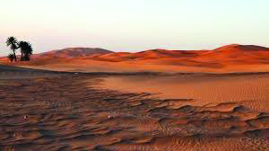

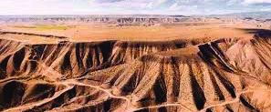


സാാമൂൂഹ്യയശാാസ്ത്രംം ക്ലാാസ്
സാാമൂൂഹ്യയശാാസ്ത്രംം ക്ലാാസ് VI
VI
89
ഭൂൂഖണ്ഡങ്ങളിിലൂൂടെെ...
ഭൂൂഖണ്ഡങ്ങളിിലൂൂടെെ...
ഏഷ്യയുടെെ ഏത് ഭാാഗത്താാണ്
് കര അതിർത്തിിയുള്ളത്്?
•
ഏഷ്യയുടെെ പടിിഞ്ഞാാറ്് ഭാാഗത്ത് സ്ഥിിതിചെ�യ്യുുന്ന യൂറൽ
പർവതനിിരയാാണ്് യൂറോ�ോപ്പിനെ�യുംംc ഏഷ്യയെ�യുംംc തമ്മിൽ
വേ�ർതിരിക്കുന്നത്.
ഏഷ്യയിലെ� ഏതാാനുംംc ഭൂപ്രകൃതി സവിിശേ�ഷത
കൾ
നമുുക്ക് പരിിചയപ്പെെƀടാംDZ.
മരുുഭൂൂമികൾ
വളരെെക്കുറച്ച് മാാത്രംം മഴ ലഭിിക്കുന്ന വരണ്ട,
വിിശാാലമാായ ഭൂപ്രദേശങ്ങളാാണ് മരുുഭൂമികൾ.
ഇവയിിൽ അത്യുു�ഷ്ണംം അനുുഭവപ്പെെƀടുന്നവ ഉഷ്ണമ
രുഭൂമികളെന്നുംംc അതിശൈൈത്യമനുുഭവപ്പെെƀടുന്നവ
ശീതമരുുഭൂമികളെന്നുംംc അറിിയപ്പെെƀടുന്നു.
സമതലങ്ങൾ
ഏറക്കുറെെ നിരപ്പാായ വിിശാാല ഭൂപ്രദേശങ്ങ
ളാാണ് സമതല
ങ്ങൾ. നദിികൾ വഹി
ിച്ചുകൊ�ൊണ്ടുുവ
രുന്ന എക്കൽ നിക്ഷേ�പിിക്കപ്പെെƀട്ട് രൂപപ്പെെƀടുന്ന
വയാാണ്് എക്കൽ സമതല
ങ്ങൾ. ഇവ പൊ�ൊതുുവെ�
ഫലഭൂൂയിഷ്ഠങ്ങളാാണ്.
പീഠഭൂൂമികൾ
ചുുറ്റുമുുള്ള പ്രദേശങ്ങളിൽ നിന്ന് ഉയർന്നതുംംc
താാരതമ്യേ�േന നിരപ്പാായ ഉപരിിതലത്തോ�
ോടുകൂടി
യതുുമാായ വിിസ്തൃത ഭൂപ്രദേശങ്ങളാാണ് പീഠഭൂ
മികൾ.
ഉഷ്ണമരു
ുഭൂമി
ശീതമരുുഭൂമി
ചിിത്രംം 7.2
ലോ�ോകത്തിിലെ� ഏറ്റവുംംc ഉയരംംകൂടിയ കൊ�ൊടുമുുടിയാായ
എവറസ്റ്റ്് സ്ഥിിതിചെ�യ്യുുന്ന ഹിമാാലയപ
ർവതംം ഏഷ്യയിലാാണുു
ള്ളത്്. ഏഷ്യയിലെ� മറ്റ് പർവതങ്ങൾ ഏതൊൊക്കെ�?
അറ്റ് ലസ്
് ഉപയോ�ോഗിച്ച് ഹിമാാലയപ
ർവതത്തിിന്റെ�യുംംc മറ്റ്
പർവതങ്ങളുടെെയുംംc സ്ഥാാനംം
കണ്ടെ�ത്തൂൂ.
പർവതങ്ങൾ കൂടാാതെെ മരുുഭൂമികൾ, സമതല
ങ്ങൾ, പീഠ
ഭൂമികൾ എന്നിവയുംംc ഏഷ്യയുടെെ ഭൂപ്രകൃതി സവിിശേ�ഷ
തകളാാണ്. ധാാരാാളംം നദിികളും�ം ഏഷ്യയിലൂടെെ ഒഴുകുന്നു.
യാാങ്്സിയാാണ്് ഏഷ്യയിലെ� ഏറ്റവുംംc നീളമേ�റിിയ നദിി.
ചിിത്രംം 7.1 - യൂൂറൽ പർവതനിിരകൾ
Page 90
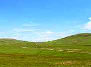


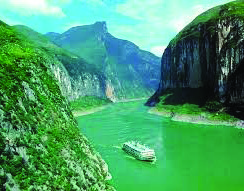

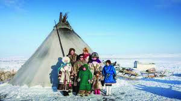


സാാമൂൂഹ്യയശാാസ്ത്രംം ക്ലാാസ്
സാാമൂൂഹ്യയശാാസ്ത്രംം ക്ലാാസ് VI
VI
90
ഭാാഗംം
ഭാാഗംം 1
കാാലാാവസ്ഥ
ഭൂൂപ്രകൃതിി പോോലെ തന്നെെų വൈൈവിധ്യയമാാർന്നതാാണ്് ഏഷ്യയയിിലെ കാാലാാവസ്ഥയുംc. ഏഷ്യയ
യുുടെെെ വടക്കുുഭാാഗംം ധ്രുുവപ്രദേശത്തോോĹോട് ചേx�ർന്ന് കിടക്കുുന്നതിിനാാൽ അവിടെെ തണുുപ്പ്് കൂടുുതൽ
അനുുഭവപ്പെ�ടുുന്നുു. സമുുദ്ര സാാമീപ്യമുുള്ളതിിനാാൽ കിഴക്കുുഭാാഗത്ത് മിതമാായ ചൂടും�ം തണുുപ്പുു
മാാണുുള്ളത്. ഭൂൂമധ്യയരേഖാാ പ്രദേശമാായതിിനാാൽ തെ�ക്കുുഭാാഗത്ത് ചൂടും�ം ഈർപ്പവുംംc കനത്തമഴ
യുുമുുള്ള കാാലാാവസ്ഥയാാണ്്. മരുുപ്രദേശമാായ പടിഞ്ഞാാറ്് ഭാാഗത്ത് പൊൊതുുവെ� ചൂട് കൂടുുത
ലാാണ്്.
ഏഷ്യയയിിലെ ചില ഭൂൂപ്രകൃതിി സവിശേ�ഷതക
ളുുടെെ ചിത്രങ്ങളാാണ്് ചുുവടെെ നൽകി
യിിട്ടുുള്ളത്. ചിത്രങ്ങൾ നിരീക്ഷിിച്ച്് അവ ഏത് ഭൂൂപ്രകൃതിി വിഭാാഗത്തിൽ ഉൾപ്പെ�ടുു
ന്നുുവെ�ന്ന് കണ്ടെെĬത്തി എഴുുതൂ.
സൈൈബീീരിിയ: അതിിശൈൈത്യംc
അനുുഭവപ്പെƀടുുന്ന പ്രദേശംം
അറേേബ്യയൻ
മരുഭൂമി: അത്യുു�ഷ്ണംം
അനുുഭവപ്പെƀടുുന്ന പ്രദേശംം
മൗസിൻറംം: ലോ�ോകത്തിിൽ
ഏറ്റവുംംc കൂടുുതൽ മഴ ലഭിിക്കുുന്ന
പ്രദേശംം
ഏഷ്യയ
മഞ്ചൂൂരിിയൻ - ..................
ഹിിമാലയംം - ..................
ഥാാർ - ..................
ലഡാാക്ക് - ശീതമരുഭൂമി
യാങ്്സി - താഴ്വര
ഡക്കാൻ - പീീഠഭൂമി
ചിിത്രംം 7.3
Page 91
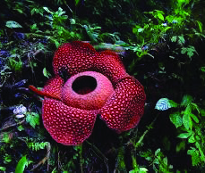


സാാമൂൂഹ്യയശാാസ്ത്രംം ക്ലാാസ്
സാാമൂൂഹ്യയശാാസ്ത്രംം ക്ലാാസ് VI
VI
91
ഭൂൂഖണ്ഡങ്ങളിിലൂൂടെെ...
ഭൂൂഖണ്ഡങ്ങളിിലൂൂടെെ...
സസ്യയ-ജന്തുുജാലങ്ങൾ
കാാലാാവസ്ഥയിിലെ� വ്യത്യാാ�സങ്ങൾക്കനുുസരിച്ച് വൈൈവിിധ്യമാാർന്ന സസ്യ-ജന്തുജാാല
ങ്ങൾ ഏഷ്യ
യിൽ കാാണപ്പെെƀടുന്നു.
ഏഷ്യയയിിലെ� ചിില സസ്യയ-ജന്തുുജാലങ്ങൾ
ഹിിമപ്പുലി
ചുവന്ന പാണ്ട
നീലക്കുറിഞ്ഞി
ജനജീീവിതം
ഏഷ്യയാാണ്് ഏറ്റവുംംc കൂടുതൽ ജനസംംഖ്യയയുളള ഭൂഖണ്ഡംം. ലോ�ോകജനസംംഖ്യയയുടെെ 60 ശതമാാന
ത്തിിലധിികവുംംc ഏഷ്യയിലാാണുുള്ളത്്. ഏഷ്യയിലെ� ഭൂരിഭാാഗംം ജനങ്ങളും�ം കാാർഷികമേ�ഖലയെ�
ആശ്രയിച്ചാാണ്
് ജീവിിക്കുന്നത്. ലോ�ോകത്ത് ഏറ്റവുംംc അധിികംം നെ�ല്ല്് ഉൽപാാദിപ്പിക്കുന്നത് ഏഷ്യ
യാാണ്്. വിിവിിധ സംംസ്കാാരങ്ങളുടെെയുംംc ഭാാഷകളുടെെയുംംc മതങ്ങളുടെെയുംംc സംംഗമഭൂൂമികൂടിയാാണ്്
ഇവിിടംം. ടോ�ോക്കിയോ�ോ, മും�ംബൈൈ
തുടങ്ങിയ തിരക്കേ�റിിയ നഗരങ്ങൾ മുുതൽ ജനവാാസംം
തീരെെ
കുറഞ്ഞ ഗ്രാാമങ്ങൾ വരെെ ഏഷ്യയിലുണ്ട്്.
സാവന്നയുംം� സഹാറയുംം� കോം�ംഗോuോ തടവുംം� കടന്ന്്...
ഭൂമധ്യരേ�ഖ, ഉത്തരാായണരേ�
ഖ, ദക്ഷിണാായനരേ�
ഖ എന്നിവയെ�ക്കുറിിച്ച് നിങ്ങൾകേ�ട്ടിിട്ടില്ലേ�. ഇവ
മൂന്നുംംc കടന്നുപോ�ോകുന്ന ഭൂഖണ്ഡംം ഏതാാണെ�ന്ന് ഗ്ലോോøോബിന്റെ� സഹാായത്തോ�
ോടെെ കണ്ടെ�ത്തൂൂ.
വിിശാാലമാായ സാാവന്നപുൽമേ�ടുുകൾ മുുതൽ ഇടതൂർന്ന മഴക്കാാടുകൾ വരെെ ഉൾക്കൊ�ൊള്ളുുന്ന വൈൈവിിധ്യ
മാാർന്ന ഭൂപ്രകൃതിയാാണ്് ഈ ഭൂഖണ്ഡത്തിിനുുള്ളത്്.
ഭൂപടംം 7.1 ൽ നിന്നുംംc ആഫ്രിിക്കയുുടെെ സ്വാ�ഭാാവിിക അതിരുകൾ കണ്ടെ�ത്തൂൂ.
വലുുപ്പത്തിിൽ രണ്ടാംം സ്ഥാാന
മുുള്ള ഭൂഖണ്ഡമാാണ് ആഫ്രിിക്ക. ഗ്ലോോøോബ് നിരീക്ഷിക്കൂ, ഉത്തരാാ
ർധ
ഗോ�ോളത്തിിലുംംc ദക്ഷിണാാർധഗോ�ോളത്തിിലുംംc ഏറക്കുറെെ തുല്യമാായി വ്യാാ�പിിച്ചുകിടക്കുന്ന ഭൂഖണ്ഡ
മാാണിിത്. ഏറ്റവുംംc വലിിയ ഉഷ്ണമരു
ുഭൂമിയാായ സഹാാറയുംംc ഉഷ്ണമേ�
ഖലാാ മഴക്കാാടുകൾ നിറഞ്ഞ
കോം�ംഗോ�ോ നദീീതടവുംംc ഈ ഭൂഖണ്ഡത്തിിന്റെ� സവിിശേ�ഷത
കളാാണ്. സഹാാറയുംംc കോം�ംഗോ�ോതടവുംംc
അറ്റ് ലസി
ിന്റെ� സഹാായത്തോ�
ോടെെ തിരിച്ചറിിയൂ.
റഫ്ലേേƌഷ്യയ
ചിിത്രംം 7.4
Page 92


സാാമൂൂഹ്യയശാാസ്ത്രംം ക്ലാാസ്
സാാമൂൂഹ്യയശാാസ്ത്രംം ക്ലാാസ് VI
VI
92
ഭാാഗംം
ഭാാഗംം 1
ലോ�ോകത്തിിലെ� ഏറ്റവുംംc നീളംം കൂടിയ നദിിയാായ നൈൈൽ ഈ
ഭൂഖണ്ഡത്തിിലൂടെെയാാണ്് ഒഴുകുന്നത്. ഇവിിടുത്തെ� ഏറ്റവുംംc ഉയ
രമുുള്ള പർവതമാാണ്
് കിളിമഞ്ചാാരോ�ോ. ആഫ്രിിക്കയിിലെ� മറ്റ് പർവ
തങ്ങൾ ഏതൊൊക്കെ�യെ�ന്ന്് അറ്റ് ലസി
ിൽ നിന്നുംംc തിരിച്ചറിിഞ്ഞ്
രേ�ഖപ്പെെƀടുത്തൂ.
•
•
ചിിത്രംം 7.5
സഹാറ മരുുഭൂൂമി
ഭൂമിയിലെ� ഏറ്റവുംംc വലിിയ ഉഷ്ണമരു
ുഭൂമിയാാണ്് സഹാാറ.
വിിശാാലമാായ മണ
ൽമേ�ടുുകളും�ം, പാാറകൾ നിറഞ്ഞ പീഠഭൂ
മികളും�ം ഉൾക്കൊ�ൊള്ളുുന്ന സഹാാറ നിരവധിി സസ്യ-ജന്തു
ജാാല
ങ്ങളുടെെ ആവാാസകേ�ന്ദ്രമാാണ്. പ്രതികൂല സാാഹചര്യ
ങ്ങളോോോട് പൊ�ൊരുുത്തപ്പെെƀട്ട് ജീവിിക്കുന്ന ഗോ�ോത്രവിിഭാാഗക്കാാരും�ം
സഹാാറയുുടെെ സവിിശേ�ഷത
യാാണ്്.
ഉഷ്ണമേ�
ഖലാ മഴക്കാടുകൾ
ഭൂമധ്യരേ�ഖാാ പ്രദേശത്ത് കാാണപ്പെെƀടുന്ന സമൃദ്ധവുംംc ഇടതൂർ
ന്നതുമാായ വനങ്ങളാാണ് ഉഷ്ണമേ�
ഖലാാ മഴക്കാാടുകൾ. ഇവിിടെെ
വർഷംം മുുഴുവനുംംc ഉയർന്ന ചൂടും�ം കനത്ത മഴയുംംc ലഭിി
ക്കുന്നു. സമൃദ്ധമാായി മഴ ലഭിിക്കുന്ന പ്രദേശങ്ങളിൽ വളരുുന്ന
കാാടുകളാായതിനാാലാാണ്് ഇവയ്ക്ക്് മഴക്കാാടുകൾ എന്ന പേ�ര്
്
ലഭിിച്ചത്. ഭൂമിയിലെ� മറ്റേ�തൊൊരു ആവാാസവ്യവസ്ഥയെ�
ക്കാാ
ളും�ം കൂടുതൽ സസ്യ-ജന്തുജാാല
ങ്ങൾ ഈ മഴക്കാാടുകളിൽ
കാാണപ്പെെƀടുന്നു. തെെക്കേ� അമേ�രിിക്കയിിലെ� ആമസോ�
ോൺ,
ആഫ്രിിക്കയിിലെ� കോം�ംഗോ�ോ, തെെക്കുകിഴക്കൻ ഏഷ്യയിലെ� മലേ�ഷ്യ
യ, ഇന്തോ�ോനേ�ഷ്യ
യ എന്നി
വിിടങ്ങളിൽ ഉഷ്ണമേ�
ഖലാാ മഴക്കാാടുകൾ കാാണപ്പെെƀടുന്നു.
ഏറ്റവുംംc വലിിയ ഉഷ്ണമരു
ുഭൂമി
...................................
ഏറ്റവുംംc ഉയരമുുള്ള പർവതംം
...................................
ഉഷ്ണമഴക്കാാടുകൾ ഉൾക്കൊ�ൊള്ളുുന്ന നദീീതടംം
...................................
വിിശാാലമാായ പുൽമേ�ടുുകൾ
...................................
ആഫ്രിിക്കൻ ഭൂഖണ്ഡത്തിിലെ� ഭൂപ്രകൃതി സവിിശേ�ഷത
കളുമാായി ബന്ധപ്പെെƀട്ട
വർക്ക്ഷീറ്റ് പൂർത്തിിയാാക്കൂൂ.
Page 93


സാാമൂൂഹ്യയശാാസ്ത്രംം ക്ലാാസ്
സാാമൂൂഹ്യയശാാസ്ത്രംം ക്ലാാസ് VI
VI
93
ഭൂൂഖണ്ഡങ്ങളിിലൂൂടെെ...
ഭൂൂഖണ്ഡങ്ങളിിലൂൂടെെ...
കാലാവസ്ഥ
ഭൂമധ്യരേ�ഖക്ക് ഇരുവശങ്ങളിലേ�ക്കുംംc ഏകദേശംം തുല്യമാായി വ്യാാ�പിിച്ചുകിടക്കുന്ന ആഫ്രിിക്ക
യിൽ പൊ�ൊതുുവെ� ചൂടുകൂടിയ കാാലാാവസ്ഥയാാണ്് അനുുഭവപ്പെെƀടുന്നത്. എങ്കിലുംംc പ്രാാദേശിക
വ്യതിയാാനങ്ങളും�ം പ്രകടമാാണ്. തീരപ്രദേശങ്ങളിലുംംc മിതോോോഷ്ണമേ�
ഖലയിിൽ ഉൾപ്പെെƀടുന്ന ഭാാഗങ്ങ
ളിലുംംc മിതമാായ കാാലാാവസ്ഥ അനുുഭവപ്പെെƀടുന്നു.
സസ്യയ-ജന്തുുജാലങ്ങൾ
ജൈൈവവൈൈ
വിിധ്യത്താാൽ സമൃദ്ധമാാണ് ആഫ്രിിക്കയിിലെ� സാാവന്നാാ പുൽമേ�ടുുകളും�ം ഉഷ്ണമേ�
ഖലാാ
മഴക്കാാടുകളും�ം. സെ�റെെൻഗെ�റ്റിയിലെ� ജന്തുജാാല
ങ്ങളുടെെ കാാലിക കുടിയേ�റ്റംം ആഫ്രിിക്കയിിലെ�
ഒരു പ്രധാാന സവിിശേ�ഷത
യാാണ്്.
ആഫ്രിിക്കയിിലെ� ചിില സസ്യയ-ജന്തുുജാലങ്ങൾ
ജനജീീവിതം
ആഫ്രിിക്കയിിലെ� ഭൂരിഭാാഗംം ജനങ്ങളും�ം ഗ്രാാമങ്ങളിൽ വസി
ിക്കുന്നവരും�ം കാാർഷികവൃത്തിിയിൽ ഏർ
പ്പെെƀടുന്നവരുുമാാണ്. സംംസ്കാാരങ്ങൾ, ഭാാഷകൾ, ചരിിത്രംം എന്നിവയാാൽ സമ്പന്നമാായ ഒരു നാാടാാണ്
ആഫ്രിിക്ക. പുരാാതന നാാഗരികതകളിൽ ഒന്നാായ
ഈജിപ്ഷ്യൻ സംംസ്കാാരംം ഉടലെ�ടുുത്തത്് ആഫ്രിി
ക്കയിിലാാണ്്. ഈജിപ്റ്റിലെ� പിിരമിഡുകൾ പ്രാാചീീന നിർമ്മാാണ വൈൈദഗ്്ധ്യത്തിിന്റെ� തെെളിവാായി
നിലകൊ�ൊ
ള്ളുുന്നു.
ബെ�യോ�ോബാ
ാബ് വൃക്ഷംം
കറുത്ത കാണ്ടാമൃഗം
ആഫ്രിിക്കൻ കാട്ടുുനായ
സെ�റെെൻഗെെuറ്റിയിലെ� കാലിക കുടിയേ�റ്റംം (Seasonal Migration of Serengeti)
കാാലാാവസ്ഥാാ വ്യതിയാാനങ്ങൾക്കുംംc ഭക്ഷണ
ലഭ്യതയ്ക്കുംംc അനുുസൃതമാായിി മൃഗങ്ങളും�ം പക്ഷി
കളും�ം ദീർഘദൂരംം സഞ്ചരിിക്കുന്ന പ്രതിഭാാസ
ങ്ങൾക്ക് ഉദാാഹരണമാാണ്
് ആഫ്രിിക്കയി
ിലെ�
കാാലിക കുടിയേ�റ്റംം. സെ�റെെൻഗെ�റ്റിയിൽ, ദശ
ലക്ഷക്കണക്കി
ിന് സീബ്രകളും�ം ഗസല്ലുകളും�ം
പുതിയ മേ�ച്ചിിൽസ്ഥലങ്ങൾ തേടി ടാാൻസാാ
നിയയ്ക്കുംംc കെ�നിിയയ്ക്കുംംc ഇടയിൽ നീങ്ങുന്നത്
ഒരു സവിിശേ�ഷ
പ്രതിഭാാസമാാണ്. ആഫ്രിിക്കയിിലുടനീളമുുള്ള ആവാാസവ്യവസ്ഥക
ളുടെെ സന്തുലിതാാവസ്ഥ ജീവജാാല
ങ്ങളുടെെ നിലനിിൽപ്പിന് നിർണാായകമാാണെ�ന്ന്
ഈ കുടിയേ�റ്റങ്ങൾ തെെളിയിക്കുന്നു.
ചിിത്രംം 7.6
Page 94
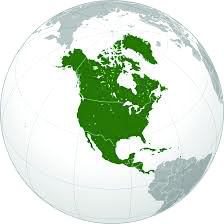


സാാമൂൂഹ്യയശാാസ്ത്രംം ക്ലാാസ്
സാാമൂൂഹ്യയശാാസ്ത്രംം ക്ലാാസ് VI
VI
94
ഭാാഗംം
ഭാാഗംം 1
റോ�ോക്കിി മുതൽ അപ്പലേ�ച്ചിിയൻ വരെെ
ഗ്ലോോøോബ് നിരീക്ഷിച്ച് പസഫിിക്, അറ്റ് ലാാന്റിിക്, ആർട്ടിക് എന്നീ
സമുുദ്രങ്ങളാാൽ ചുുറ്റപ്പെെƀട്ട ഭൂഖണ്ഡംം ഏതാാണെ�ന്ന് കണ്ടെ�ത്തൂൂ.
ലോ�ോകത്തിിലെ� ചില വിികസിത രാാജ്യയങ്ങളും�ം വലിിയ നഗരങ്ങളും�ം
ഉൾപ്പെെƀടുന്ന ഭൂഖണ്ഡമാാണ് വടക്കേ� അമേ�രിിക്ക. വടക്കേ� അമേ�
രിക്കൻ രാാജ്യയങ്ങളുടെെ വിികസനമുുന്നേ�റ്റത്തിിനുു പിിന്നിൽ അവിി
ടുത്തെ� ഭൂമിശാാസ്ത്ര സവിിശേ�ഷത
കൾക്ക് വലിിയ പങ്കുുണ്ട്്.
ഭൂപടംം 7.1ൽ നിന്നുംംc വടക്കേ� അമേ�രിിക്കയുുടെെ സ്വാ�ഭാാവിിക
അതിരുകൾ കണ്ടെ�ത്തൂൂ.
വടക്കേ� അമേ�രിിക്കയിിൽ സ്ഥിിതിചെ�യ്യുുന്ന രണ്ട്് പ്രധാാന
പർവതനിിരകളാാണ് റോ�ോക്കി, അപ്പലേ�ച്ചിിയൻ എന്നിവ. അറ്റ് ലസി
ിന്റെ� സഹാായത്തോ�
ോടെെ ഈ
പർവതനിിരകളുടെെ സ്ഥാാനംം
കണ്ടെ�ത്തൂൂ. ഈ ഭൂഖണ്ഡത്തിിലെ� ഫലഭൂൂയിഷ്ഠമാായ സമതല
ങ്ങ
ളാാണ് മഹാാസമതല
ങ്ങൾ. വടക്കേ� അമേ�രിിക്കയിിലെ� അതിവിിശാാലമാായ പുൽമേ�ടുുകളാാണ് പ്രയ
റിികൾ. മിസോ�
ോറിിയുംംc മിസിസിപ്പിയുംംc ഉൾപ്പെെƀടെെ ധാാരാാളംം നദിികൾ വടക്കേ� അമേ�രിിക്കയിിലുണ്ട്്.
പഞ്ചമഹാാതടാാ
കങ്ങൾ എന്നറിിയപ്പെെƀടുന്ന അഞ്ച് വലിിയ ശുദ്ധജലതടാാ
കങ്ങളും�ം ഇവിിടെെയാാണ്്.
വടക്കേ� അമേ�രിിക്കയിിലെ� അരിസോ�
ോണയിിൽ സ്ഥിിതി ചെ�യ്യുുന്ന ബൃഹദ്് താാഴ്വരയാായ ഗ്രാാൻഡ്
കാാന്യോ�ോ�ൺ ഒരു പ്രകൃതിദത്ത അത്ഭുുതമാാണ്്.
ചിിത്രംം 7.7
ഗ്രാാൻഡ് കാന്യോ�ോ�ൺ
ഏകദേശംം 446 കിലോ�ോമീറ്റർ നീളവുംംc 29 കിലോ�ോ
മീറ്റർ വരെെ വീതിയുംംc 1500 മീറ്ററിിലധിികംം ആഴവു
മുുള്ള വലിിയ താാഴ്വരയാാണ്് ഗ്രാാൻഡ് കാാന്യോ�ോ�ൺ.
കൊ�ൊളറാാഡോ�
ോ നദിിയുടെെ പ്രവർത്തനങ്ങളുടെെ ഫല
മാായി ദശലക്ഷക്കണക്കി
ിന് വർഷങ്ങൾകൊ�ൊണ്ട്്
രൂപപ്പെെƀട്ടതാാണ് ഈ ബൃഹദ്് താാഴ്വര. ഇത് യുനെ�
സ്കോ�ോയുടെെ ലോ�ോക പൈൈതൃക ഇടമാാണ്.
കാലാവസ്ഥ
ധ്രുുവ പ്രദേശത്തോ�
ോട് ചേ�ർന്നുകിടക്കുന്നതിനാാൽ ഭൂഖണ്ഡത്തിിന്റെ� വടക്കുഭാാഗത്ത് അതിശൈൈ
ത്യമാാണ് അനുുഭവപ്പെെƀടുന്നത്. വടക്കുനിന്നുംംc തെെക്കോ�ോട്ടു നീങ്ങുംംcതോോോറും�ം താാരതമ്യേ�േന ചൂട്
വർധിിച്ചുവരുുന്നു.
സസ്യയ-ജന്തുുജാലങ്ങൾ
വൈൈവിിധ്യമാാർന്ന സസ്യ-ജന്തുജാാല
ങ്ങളുടെെ ആവാാസകേ�ന്ദ്രമാാണ് വടക്കേ� അമേ�രിിക്ക. പടിിഞ്ഞാാറ്്
ഭാാഗത്തുളള സെ�ക്വവയ വനങ്ങളും�ം മഹാാസമതല
ങ്ങളിലെ� പുൽമേ�ടുുകളും�ം ഇതിനുുദാാഹരണങ്ങളാാണ്.
Page 95
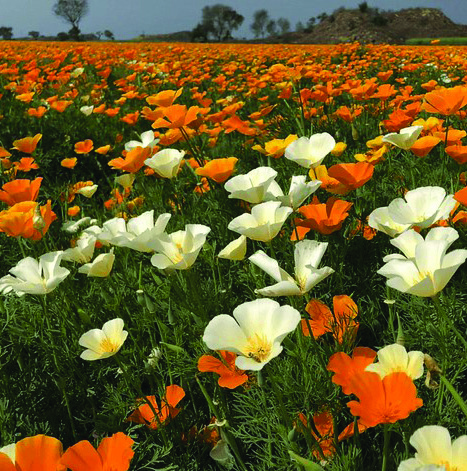
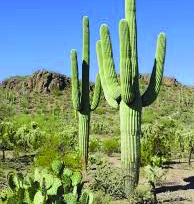
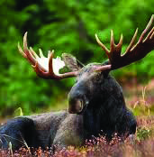


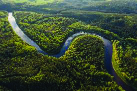
സാാമൂൂഹ്യയശാാസ്ത്രംം ക്ലാാസ്
സാാമൂൂഹ്യയശാാസ്ത്രംം ക്ലാാസ് VI
VI
95
ഭൂൂഖണ്ഡങ്ങളിിലൂൂടെെ...
ഭൂൂഖണ്ഡങ്ങളിിലൂൂടെെ...
ജനജീീവിതം
അമേ�രിിക്കൻ ഐക്യനാാടുകളും�ം (യു.എസ്.എ) കാാനഡയുംംc ഉയർന്ന ജീവിിത നിലവാാരത്തിിനുംംc
സാാങ്കേ�തിിക പുരോ�ോഗതിക്കുംംc പേ�രു
ുകേ�ട്ടതാാണ്. ന്യൂൂ�യോ�ോർക്ക്, ലോ�ോസ് ഏഞ്ചൽസ്, മെെക്്സിക്കോ�ോ
സിറ്റി തുടങ്ങിയ ലോ�ോകത്തിിലെ� വലിിയ നഗരങ്ങൾ വടക്കേ� അമേ�രിിക്കയിിൽ സ്ഥിിതിചെ�യ്യുുന്നു.
അനുുകൂല കാാലാാവസ്ഥയുംംc ഫലഭൂൂയിഷ്ഠമാായ മണ്ണുംംc ഇവിിടുത്തെ� കാാർഷിക മേ�ഖലയെ� സമ്പുു
ഷ്ടമാാക്കുന്നു. മഞ്ഞുമൂടിക്കിടക്കുന്ന പ്രദേശങ്ങളിൽ താാമസിക്കുന്ന ഇന്യൂൂ�ട്ടുകൾ (എസ്കിമോ�ോകൾ)
ഇവിിടുത്തെ� മറ്റൊ�ൊരുു പ്രത്യേേകതയാാണ്്.
വടക്കേ� അമേ�രിിക്കയിിലെ� ചിില സസ്യയ-ജന്തുുജാലങ്ങൾ
കാലിഫോോർണിിയ പോ�ോപ്പി
സഗ്വാ�രോ�ോ കള്ളിിച്ചെ�ടിി
മൂസ്
വടക്കേ� അമേ�രിിക്കയി
ിലെ�ത്തുുന്ന സഞ്ചാാരികൾക്ക് ആവശ്യമാായ
വിിവരങ്ങൾ നൽ
കുന്ന ടൂറിിസ്റ്റ്് ഗൈൈഡാായി സങ്കൽപ്പിച്ച് ഈ ഭൂഖണ്ഡത്തിിന്റെ� സവിിശേ�ഷത
കൾ ഉൾപ്പെെƀ
ടുത്തിി വിിവരണംം തയ്യാാറാാക്കൂൂ.
ആമസോ�ോൺ തടത്തിിൽ നിിന്ന്...
ആമസോ�ോൺ തടത്തിിൽ നിിന്ന്...
ആമസോ�
ോൺ മഴക്കാാടുകളെക്കുറിിച്ച് നിങ്ങൾ കേ�ട്ടിിട്ടില്ലേ�. 'ഭൂമി
യുടെെ ശ്വാാ�സകോ�ോശംം' എന്ന് ഇവയെ� വിിശേ�ഷി
ിപ്പിക്കാാറുുണ്ട്്.
ലോ�ോകത്ത് മറ്റെെവിിടെെയുംംc ഇല്ലാാത്ത
അനേ�കംം
സസ്യ-ജന്തുജാാല
ങ്ങളുടെെ ആവാാസകേ�ന്ദ്രമാായ ആമസോ�
ോൺ മഴക്കാാടുകൾ തെെക്കേ�
അമേ�രിിക്കയിിലാാണുുള്ളത്്.
അറ്റ്ലസി
ിന്റെ� സഹാായത്തോ�
ോടെെ തെെക്കേ� അമേ�രിിക്കയുുടെെ സ്വാ�ഭാാ
വിിക അതിരുകൾ തിരിച്ചറിിയൂ.
ചിിത്രംം 7.9
ചിിത്രംം 7.10 ആമസോ�ോൺ
മഴക്കാടുകളും�ം
ആമസോ�ോൺ നദിിയുംം�
ചിിത്രംം 7.8
ലോ�ോകത്തിിലെ� ഏറ്റവുംംc നീളമേ�റിിയ പർവതനിിരയാായ ആൻഡീസുംംc
ഏറ്റവുംംc വലിിയ നദിിയാായ ആമസോ�
ോണുംംc ഇവിിടെെയാാണുുള്ളത്്.
അതിവിിശാാല ഭൂപ്രദേശമാായ
ആമസോ�
ോൺ നദീീതടത്തിിന്റെ� ഭൂരി
ഭാാഗവുംംc മഴക്കാാടുകളാാണ്. ലോ�ോകത്തിിലെ� ഏറ്റവുംംc വരണ്ട മരുുഭൂ
മിയാായ അറ്റക്കാാമ തെെക്കേ� അമേ�രിിക്കയുുടെെ മറ്റൊ�ൊരുു ഭൂപ്രകൃതി
സവിിശേ�ഷത
യാാണ്്.
Page 96


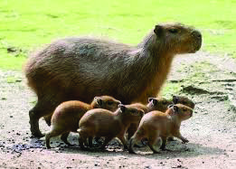


സാാമൂൂഹ്യയശാാസ്ത്രംം ക്ലാാസ്
സാാമൂൂഹ്യയശാാസ്ത്രംം ക്ലാാസ് VI
VI
96
ഭാാഗംം
ഭാാഗംം 1
കാലാവസ്ഥ
ഭൂമധ്യരേ�ഖാാപ്രദേശമാായതിിനാാൽ തെെക്കേ� അമേ�രിിക്കയുുടെെ വടക്കുഭാാഗങ്ങളിൽ കൂടിയ ചൂടും�ം
സമൃദ്ധമാായ മഴയുംംc ലഭിിക്കുന്നു. തെെക്കേ� അമേ�രിിക്കയുുടെെ ഏറ്റവുംംc തെെക്ക് ശൈൈത്യ കാാലാാവസ്ഥ
അനുുഭവപ്പെെƀടുന്നു.
സസ്യയ-ജന്തുുജാലങ്ങൾ
ആമസോ�
ോൺ മഴക്കാാടുകൾ ഉൾപ്പെെƀടുന്ന തെെക്കേ� അമേ�രിിക്ക ജൈൈവവൈൈ
വിിധ്യ സമൃദ്ധമാാണ്.
ആമസോ�
ോൺ വാാട്ടർ ലില്ലി, അനാാകോ�ോണ്ട മുുതലാായവയ്ക്ക്് പ്രസിദ്ധമാാണിിവിിടംം. തെെക്കേ� അമേ�രിി
ക്കയിിലെ� ആൻഡീസ് പർവതനിിരകൾ ആൻഡിയൻ ലൂപിിൻ എന്ന പുഷ്പച്ചെ�ടിയുടെെയുംംc ലാാമ
പോ�ോലുള്ള സസ്തനികളുടെെയുംംc ആവാാസകേ�ന്ദ്രമാാണ്. ലോ�ോകത്തിിലെ� ഏറ്റവുംംc വലിിയ ഉഷ്ണമേ�
ഖ
ലാാതണ്ണീീർത്തട പ്രദേശങ്ങളിലൊ�ൊന്നാാണ്് തെെക്കേ� അമേ�രിിക്കയിിലെ� പാാന്റനൽ. സസ്തനി വിിഭാാഗ
ത്തിിൽപ്പെെƀട്ട കാാപ്പിബാാര ഈ മേ�ഖലയിിൽ കാാണപ്പെെƀടുന്നു.
തെ�ക്കേ� അമേ�രിിക്കയിിലെ� ചിില സസ്യയ-ജന്തുുജാലങ്ങൾ
ജനജീീവിതം
തെെക്കേ� അമേ�രിിക്കയിിലെ� ജനങ്ങളിലധിികവുംംc കൃഷി, മത്സ്യയബന്ധനംം
, വ്യവസാായംം എന്നിവയിിൽ
ഏർപ്പെെƀടുന്നവരാാണ്. തദ്ദേŔശീയർ, യൂറോ�ോപ്യർ, ആഫ്രിിക്കക്കാാർ, ഏഷ്യക്കാാർ എന്നിവരുുടെെ സാാന്നി
ധ്യത്താാൽ സാംംസ്കാാരിക വൈൈവിിധ്യങ്ങൾക്ക് ശ്രദ്ധേ�യമാാണ്
് ഈ ഭൂഖണ്ഡംം.
വിിവരസാാങ്കേ�തിികവിിദ്യയുടെെ സഹാായത്തോ�
ോടെെ തെെക്കേ� അമേ�രിിക്കയിിലെ� വിിവിിധ
സസ്യ-ജന്തുജാാല
ങ്ങളുടെെ ചിത്രങ്ങളും�ം വിിവരങ്ങളും�ം ശേ�ഖരിച്ച് ചുുമർപത്രിക തയ്യാാ
റാാക്കി ക്ലാാസിൽ പ്രദർശിപ്പിക്കൂ.
ആൻഡിയൻ
ലൂൂപിൻ
ലാമ
കാപ്പിബാര
ആമസോ�ോൺ
വാട്ടർ ലില്ലിി
Page 97

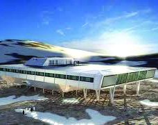
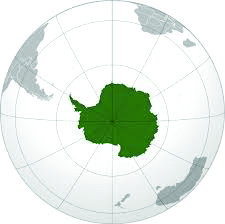
സാാമൂൂഹ്യയശാാസ്ത്രംം ക്ലാാസ്
സാാമൂൂഹ്യയശാാസ്ത്രംം ക്ലാാസ് VI
VI
97
ഭൂൂഖണ്ഡങ്ങളിിലൂൂടെെ...
ഭൂൂഖണ്ഡങ്ങളിിലൂൂടെെ...
വെ�ളുുത്ത ഭൂൂഖണ്ഡം തേ�ടിി...
വെ�ളുുത്ത ഭൂൂഖണ്ഡം തേ�ടിി...
ചിത്രങ്ങൾ ശ്രദ്ധിക്കൂ.
വിിവിിധ പഠനങ്ങൾക്കാായിി ഇന്ത്യയ സ്ഥാാപിിച്ചിട്ടുളള രണ്ട്് ഗവേ�ഷണ
കേ�ന്ദ്രങ്ങളാാണ് മൈൈത്രിിയുംംc
ഭാാരതിയുംംc. ഇവ ഏതു ഭൂഖണ്ഡത്തിിലാാണ്് സ്ഥിിതിചെ�യ്യുുന്നത്?
•
ഈ വൻകരയുടെെ 98 ശതമാാനവുംംc അൻ്റാാർട്ടിക്ക് ഹിമപാാളിി
യാാണ്്. ഭൂമിയിലെ� ശുദ്ധജലത്തിിൻ്റെ� ഭൂരിഭാാഗവുംംc ഈ ഹിമപാാളിി
യിൽ അടങ്ങിയിരിക്കുന്നു.
ചിത്രംം 7.12 ഉംം ഗ്ലോോøോബുംംc നിരീക്ഷിച്ച് അൻ്റാാർട്ടിക്കയുുടെെ സ്ഥാാനംം
കണ്ടെ�ത്തൂൂ. പൂർണ്ണമാായുംം
c ദക്ഷിണ സമുുദ്രത്താാൽ ചുുറ്റപ്പെെƀട്ടിരി
ക്കുന്ന ഭൂഖണ്ഡമാാണ് അന്റാാർട്ടിക്ക.
അന്റാാർട്ടിക്കയുുടെെ ഭൂപ്രകൃതി സവിിശേ�ഷത
കൾ എന്തെ�ല്ലാാമെെന്ന്
്
പരിിശോ�ോധിിക്കാംം.
ട്രാാൻസ് അന്റാാർട്ടിക്ക് പർവതനിിരകളാാണ് ഭൂഖണ്ഡത്തെ� കിഴക്കൻ അന്റാാർട്ടിക്ക എന്നുംംc പടിി
ഞ്ഞാാറൻ അന്റാാർട്ടിക്ക എന്നുംംc വിിഭജിക്കുന്നത്. തെെക്കേ� അമേ�രിിക്കയ്ക്ക്് അടുത്താായി
ി സ്ഥിിതിചെ�
യ്യുുന്ന അന്റാാർട്ടിക്കയിിലെ� ഒരു ഭൂപ്രകൃതി വിിഭാാഗമാാണ് അൻ്റാാർട്ടിക്ക് ഉപദ്വീീ�പ്. അന്റാാർട്ടിക്കയിിലെ�
ഏറ്റവുംംc വലിിയ പർവതംം വിിൻസൺ മാാസിഫാാണ്. ഈ ഭൂഖണ്ഡത്തിിൽ നിരവധിി അഗ്നിിപർവത
ങ്ങളും�ം കാാണപ്പെെƀടുന്നു.
കാലാവസ്ഥ
വർഷംം മുുഴുവനുംംc മഞ്ഞുമൂടിക്കിടക്കുന്ന ശീതമരുുഭൂമിയാാണ്് അന്റാാർട്ടിക്ക. അന്റാാർട്ടിക്കയുുടെെ
സ്ഥാാനംം
അതിന്റെ� കാാലാാവസ്ഥയെ� സവിിശേ�ഷമാാക്കു
ുന്നു.
സസ്യയ-ജന്തുുജാലങ്ങൾ
ഹിമപാാളിികളുടെെ വിിള്ളലുുകളിൽ കാാണപ്പെെƀടുന്ന ചില പാായൽവർഗ സസ്യങ്ങളൊൊഴിച്ചാാൽ
അന്റാാർട്ടിക്കയുുടെെ ഭൂരിഭാാഗംം പ്രദേശങ്ങളും�ം തരിശാാണ്്. ഈ ഭൂഖണ്ഡത്തിിന്റെ� പല തീരപ്രദേശ
ങ്ങളും�ം പെ�ൻഗ്വിി�നുുകളുടെെയുംംc സീലുകളുടെെയുംംc ആവാാസകേ�ന്ദ്രങ്ങളാാണ്.
ചിിത്രംം 7.12
ചിിത്രംം 7.11
മൈൈത്രിി
ഭാരതിി
Page 98


സാാമൂൂഹ്യയശാാസ്ത്രംം ക്ലാാസ്
സാാമൂൂഹ്യയശാാസ്ത്രംം ക്ലാാസ് VI
VI
98
ഭാാഗംം
ഭാാഗംം 1
ചിിത്രംം 7.14
ജനജീീവിതംം
മനുുഷ്യയവാാസംം തീരെെയിില്ലാാത്ത ഭൂൂഖണ്ഡമാാണ്് അൻ്റാാർട്ടിക്ക. പാാരിസ്ഥിതിിക സവിശേ�ഷതക
ളെ�ക്കുുറിിച്ച്് ഗവേ�ഷണംം
നടത്തുുന്നവരും�ം സാാഹസിക യാാത്രികരും�ം മാാത്രമാാണ്് ഇവിടെെയെ�ത്തുുന്നത്.
പൗൗരാണിിക സാഹസി
ിക നാവികരുുടെെ നാട്ടിിലേ�ക്ക്്...
പൗൗരാണിിക സാഹസി
ിക നാവികരുുടെെ നാട്ടിിലേ�ക്ക്്...
സാാഹസികരാായ
നാാവികരുുടെെെ ചരിത്രപ്രസിദ്ധങ്ങളാായ
യാാത്രകളാാണ്് ലോോോകത്തിന്റെ� വിവിധ
ഭാാഗങ്ങളെ� തമ്മിിൽ ബന്ധിിപ്പിച്ചത്്. വാാസ്കോോǘോ ഡ ഗാാമ ഇന്ത്യയയിി
ലേക്ക് നടത്തിയ യാാത്ര മുുൻക്ലാാസിൽ നിങ്ങൾ പരിചയപ്പെ�ട്ടല്ലോ�ോ.
സമുുദ്രമാാർഗംം അദ്ദേŔഹംം ഇന്ത്യയയിിലേക്ക് നടത്തിയ യാാത്രകൾ ചരി
ത്രപ്രാാധാാന്യയമുുള്ളവയാാണ്്.
ഏത് ഭൂൂഖണ്ഡത്തിൽ നിന്നാാണ്് അദ്ദേŔഹംം ഇന്ത്യയയിിലേക്കുുള്ള
യാാത്ര ആരംംഭിച്ചത്്?
•
ഇന്ത്യയയുുടെെെ ചരിത്രത്തെെĹ സ്വാ�ധീീനിച്ച വാാസ്കോോǘോ ഡ ഗാാമയുുടെെെ നാാട്ടിി
ലേക്ക് നമുുക്കൊ�ൊരുു യാാത്ര പോോയാാലോോോ?
ഭൂൂപടംം 7.1 ൽ നിന്നുംc യൂറോ�ോപ്പിന്റെ� സ്വാ�ഭാാവിക അതിിരുുകൾ
കണ്ടെെĬത്തൂ.
യൂറോ�ോപ്പിന്റെ� ചില ഭൂൂപ്രകൃതിി സവിശേ�ഷതക
ൾ ശ്രദ്ധിക്കൂ.
ആൽപ്സ്്, ബ്ലാാക്ക്് ഫോോോറസ്റ്റ്്, കാാർപാാത്തിയൻ മുുതലാായ നിരവധിി പർവതനിിരകൾ യുുറോ�ോ
പ്പിലുുണ്ട്. ലോോോകത്തിലെ നീളമേ�റിിയ നദിികളിിൽ ചിലതാായ ഡാാന്യൂൂ�ബ്, വോ�ോൾഗ, റൈൈൻ മുുതലാാ
യവ ഒഴുുകുുന്നത് ഈ ഭൂൂഖണ്ഡത്തിലൂടെെയാാണ്്. യൂറോ�ോപ്പിൽ ഫലഭൂൂയിിഷ്ഠമാായ സമതല
ങ്ങളുംcം
പുുൽമേ�ടുുകളുുമുുണ്ട്. കിഴക്കൻ യൂറോ�ോപ്പിലെ അതിിവിശാാലമാായ പുുൽമേ�ടുുകൾ സ്റ്റെ�പ്പിി എന്നറി
യപ്പെ�ടുുന്നുു. യൂറോ�ോപ്പിന്റെ� വടക്കൻതീരങ്ങളുുടെെ ചില ഭാാഗങ്ങൾ ഫിജോോzോർഡുുകൾ അഥവാാ 'ഫി
യോ�ോഡുുകൾ' എന്നറിയപ്പെ�ടുുന്ന സവിശേ�ഷ ഭൂൂപ്രകൃതിിയാാൽ സമ്പന്നമാാണ്്.
ഫിിജോ�ോർഡുകൾ അഥവാാ ഫിിയോ�ോഡുുകൾ
(Fjords or Fiords)
സാാധാാരണയാായിി ഹിമാാനിികളുുടെെ പ്രവർത്തനത്താാൽ
രൂപംം കൊ�ൊള്ളുുന്നതുംc, പർവതങ്ങളാാൽ ചുുറ്റപ്പെ�ട്ടതോ�ോ
കുുത്തനെ�യുുള്ള ചരിവുുകൾക്കിടയിിലുുള്ളതോ�ോ ആയ
ഇടുുങ്ങിയ കടൽത്തീരങ്ങളാാണ്് ഫിയോ�ോഡുുകൾ.
അൻ്റാാർട്ടിിക്കയിിലെ� പ്രധാാന സസ്യയ-ജന്തുുജാലങ്ങൾ
ചിിത്രംം 7.13
പായലുകൾ
പെ�ൻഗ്വിി�ൻ
സീലുകൾ
നോ�ോർവേ�യിലെ� ഫിിയോ�ോഡ്് തീരങ്ങൾ
Page 99

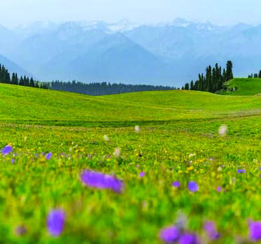


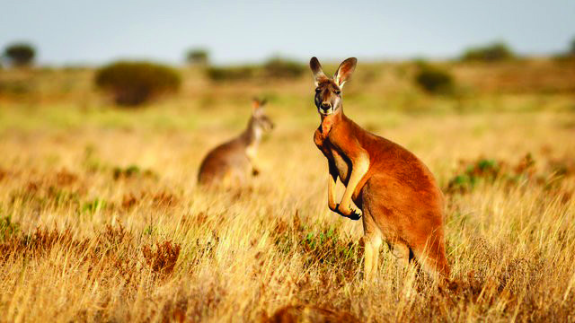
സാാമൂൂഹ്യയശാാസ്ത്രംം ക്ലാാസ്
സാാമൂൂഹ്യയശാാസ്ത്രംം ക്ലാാസ് VI
VI
99
ഭൂൂഖണ്ഡങ്ങളിിലൂൂടെെ...
ഭൂൂഖണ്ഡങ്ങളിിലൂൂടെെ...
കാാലാാവസ്ഥ
യൂറോ�ോപ്പിൽ പൊൊതുുവെ� മിതമാായ ചൂടും�ം തണുുപ്പുുമുുളള
കാാലാാവസ്ഥയാാണ്് അനുുഭവപ്പെ�ടുുന്നത്.
ഈ വൻകരയുുടെെെ വടക്കുുഭാാഗങ്ങളിൽ ശൈൈത്യകാാലത്ത് മഞ്ഞുുവീീഴ്ച സാാധാാരണ
മാാണ്്.
സസ്യയ-ജന്തുുജാലങ്ങൾ
യൂറോ�ോപ്പിലെ ആൽപൈൈൻ പ്രദേശംം പുുൽമേ�ടുുകൾക്കുംc മെെഡിിറ്ററേ�നിിയൻ മേ�ഖല മുുന്തിരിത്തോോĹോ
ട്ടങ്ങൾക്കുംc പ്രസിദ്ധമാാണ്്.
യൂറോോപ്പിലെ� ചിില സസ്യയ-ജന്തുുജാലങ്ങൾ
ജനജീീവിതംം
യൂറോ�ോപ്യർ പൊൊതുുവെ� ഉയർന്ന ജീവിതനിിലവാാരംം പുുലർത്തുുന്നവരാാണ്്. സമ്പന്നമാായ
കലാാ-സാംസ്കാാരിക പൈൈതൃകമുുള്ള ഭൂൂഖണ്ഡമാാണ്് യൂറോ�ോപ്പ്്. ലോോോകത്തിലെ ഏറ്റവുംc പഴക്കംംചെെ
xന്ന
നഗര
ങ്ങളാായ ഏതൻസ്, റോം�ം എന്നിവ യൂറോ�ോപ്പിലാാണ്്. പാാരീസ്, ലണ്ടൻ, ബെ�ർലിൻ തുുടങ്ങിയ
നഗര
ങ്ങൾ കല, ഫാാഷൻ, സാാങ്കേÿതിികവിിദ്യ എന്നിവയുുടെെ കേ�ന്ദ്രങ്ങളാാണ്്.
യൂറോ�ോപ്പിന്റെ� ഭൂൂമിശാാസ്ത്ര സവിശേ�ഷതക
ൾ ഉൾപ്പെ�ടുുത്തി കുുറിപ്പ്് തയ്യാാറാാക്കൂൂ.
സഞ്ചിി മൃഗങ്ങളുുടെെ നാട്ടിിലേ�ക്ക്്...
സവിശേ�ഷതക
ൾ ധാാരാാളമുുള്ള മൃഗങ്ങളാാണല്ലോ�ോ കങ്കാാരുു
ക്കൾ. ഇവ കാാണപ്പെ�ടുുന്ന ഭൂൂഖണ്ഡമാാണ്് ആസ്ട്രേğലിയ.
പൂർണ്ണമാായുംc
ദക്ഷിിണാാർധഗോ�
ോളത്തിൽ
സ്ഥിതിി
ചെെxയ്യുുന്ന
ആസ്ട്രേğലിയ ഭൂൂഖണ്ഡത്തെെĹക്കുുറിിച്ച്് കൂടുുതൽ
കാാര്യങ്ങൾ അന്വേ�േഷിിക്കാം.
അറ്റ് ലസിൽ നിന്നുംc ആസ്ട്രേğലിയയുുടെെെ സ്വാ�ഭാാവിക
അതിിരുുകൾ തിിരിച്ചറിിഞ്ഞ് രേഖപ്പെ�ടുുത്തൂ.
പൂർണ്ണമാായുംc സമുുദ്രത്താാൽ ചുുറ്റപ്പെ�ട്ട ആസ്ട്രേğലിയ
ഏറ്റവുംc ചെെxറിയ ഭൂൂഖണ്ഡമാാണ്്.
ചിിത്രംം 7.16
ചിിത്രംം 7.15
ലിൻക്സ്
ആൽപ്പൈൈൻ സ്റ്റെെǢപ്പി പുൽമേ�ട്്
കോ��ർക്ക് ഓക്ക് മരങ്ങൾ
Page 100
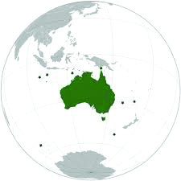


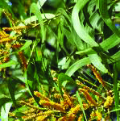
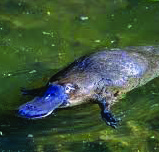

സാാമൂൂഹ്യയശാാസ്ത്രംം ക്ലാാസ്
സാാമൂൂഹ്യയശാാസ്ത്രംം ക്ലാാസ് VI
VI
100
ഭാാഗംം
ഭാാഗംം 1
ആസ്ട്രേ�ലിിയയി
ിലെ� പ്രധാാന പർവതനിിരയാാണ്് ഗ്രേ�റ്റ്്
ഡിവൈൈഡിിങ്് റേ�ഞ്ച്്. ഗ്രേ�റ്റ്് വിിക്ടോോÜോറിിയ ഇവിിടുത്തെ� പ്രധാാന
മരുുഭൂമികളിലൊ�ൊന്നാാണ്്. ആസ്ട്രേ�ലിിയയുുടെെ കിഴക്കൻ തീരത്ത്
സ്ഥിിതിചെ�യ്യുുന്ന ഗ്രേ�റ്റ്് ബാാരിയർ റീഫ് പവിിഴപ്പുറ്റുകളാാൽ നിർ
മ്മിതമാാണ്്. മുുറെെ-ഡാാർലിംംcങ്് നദീീതടംം ഭൂഖണ്ഡത്തിിലെ� ഫലഭൂൂ
യിഷ്ഠമാായ കാാർഷിക മേ�ഖലയാാണ്്.
കാലാവസ്ഥ
ആസ്ട്രേ�ലിിയയുുടെെ ഭൂരിഭാാഗംം പ്രദേശത്തുംംc വരണ്ട കാാലാാവസ്ഥ
യാാണ്് അനുുഭവപ്പെെƀടുന്നത്. ഭൂഖണ്ഡത്തിിന്റെ� ഉൾപ്രദേശങ്ങളി
ലേ�ക്ക്് പോ�ോകുന്തോ�ോറും�ം വരൾച്ചയുടെെ തീവ്രത വർധിിക്കുന്നു.
സസ്യയ-ജന്തുുജാലങ്ങൾ
ആസ്ട്രേ�ലിിയയുുടെെ ഒറ്റപ്പെെƀട്ട സ്ഥാാനംം
സസ്യ-ജന്തുജാാല
ങ്ങൾ വ്യത്യസ്തമാായ രീതിയിൽ പരിിണ
മിക്കുന്നതിനുു കാാരണമാായിി. മാാർസുപ്പിയലുുകളും�ം മുുട്ടയിടുന്ന സസ്തനികളും�ം ഇതിന് ഉദാാഹരണ
ങ്ങളാാണ്.
ആസ്ട്രേേğലിയയിിലെ� ചിില സസ്യയ-ജന്തുുജാലങ്ങൾ
ചിിത്രംം 7.17
ആസ്ട്രേ�ലിിയയിിൽ കാാണപ്പെെƀടുന്ന പ്രധാാന ജന്തുവിിഭാാഗമാാണ് മാാർസുപ്പിയലുുകൾ.
ഉദരസഞ്ചികളിൽ കുഞ്ഞുങ്ങളെ കൊ�ൊണ്ടുുനടക്കുന്ന കങ്കാാരു
ു, കൊ�ൊആല (koala)
എന്നിവ മാാർസുപ്പിയലുുകൾക്ക് ഉദാാഹരണങ്ങളാാണ്. ഇവ കൂടാാതെെ, മുുട്ടയിടുന്ന
സസ്തനികളാായ പ്ലാാറ്റിപ്പസുംംc എക്കിഡ്നയുംംc ആസ്ട്രേ�ലിിയയിിൽ കാാണപ്പെെƀടുന്ന മറ്റു
ജീവിികളാാണ്. ഇവിിടുത്തെ� സസ്യജാാല
ങ്ങളിൽ യൂക്കാാലിിപ്റ്റസ് മരങ്ങളും�ം വാാറ്റിൽ
എന്നറിിയപ്പെെƀടുന്ന അക്കേ�ഷ്യ
യയുംംc ഉൾപ്പെെƀടുന്നു.
എക്കിഡ്ന
കൊ�ൊആല
അക്കേ�ഷ്യയ
പ്ലാാറ്റിപ്പസ്
യൂൂക്കാലിപ്റ്റസ്
Page 101

സാാമൂൂഹ്യയശാാസ്ത്രംം ക്ലാാസ്
സാാമൂൂഹ്യയശാാസ്ത്രംം ക്ലാാസ് VI
VI
101
ഭൂൂഖണ്ഡങ്ങളിിലൂൂടെെ...
ഭൂൂഖണ്ഡങ്ങളിിലൂൂടെെ...
ജനജീീവിതം
ആധുനിക നഗരങ്ങളുടെെയുംംc പുരാാതന സംംസ്കാാരങ്ങളുടെെയുംംc നാാടാാണ് ആസ്ട്രേ�ലിിയ.
ഇവിിടുത്തെ� തദ്ദേŔശീയരാായ ഗോ�ോത്രവിിഭാാഗക്കാാർ വളരെെ പഴക്കമുുള്ള സംംസ്കാാരത്തിിനുുടമകളാാണ്.
സിഡ്നിി, മെെൽബൺ, ബ്രിസ്ബേ�
ൻ തുടങ്ങിയ നഗരങ്ങൾ ഉയർന്ന ജീവിിത നിലവാാരത്തിിനുംംc
സാംംസ്കാാരിക പ്രവർത്തനങ്ങൾക്കുംംc പ്രസിദ്ധമാാണ്.
ഓരോ�ോ ഭൂഖണ്ഡവുംംc തനതുു ഭൂമിശാാസ്ത്ര സവിിശേ�ഷത
കൾ ഉള്ളവയാാണെ�ന്ന്് തിരിച്ചറിിഞ്ഞില്ലേ�?
ഏതെെങ്കിലുംംc ഒരു ഭൂഖണ്ഡംം സന്ദർശിക്കാാൻ അവസരംം ലഭിിച്ചാാൽ, ഏതുഭൂഖണ്ഡമാായിരിക്കുംംc
നിങ്ങൾ തിരഞ്ഞെ�ടുുക്കുക? തെെക്കേ� അമേ�രിിക്കയിിലെ� മഴക്കാാടുകൾ സന്ദർശിക്കുമോ�ോ?ഏഷ്യ
യിലെ� പർവതങ്ങൾ കീഴടക്കുമോ�ോ? അല്ലെ�ങ്കിിൽ അൻ്റാാർട്ടിക്കയിിലെ� അതിശൈൈത്യത്തെ�സധൈൈ
ര്യം�ം നേ�രിിടുമോ�ോ? കണ്ടെ�ത്താാനാായിി കാാത്തിിരിക്കുന്ന, ഇനിയുമേ�റെെ
അത്ഭുുതങ്ങൾ നിറഞ്ഞതാാണ്
്
നമ്മുടെെ ലോ�ോകംം!
മരുുഭൂമി
ഗ്രേ�റ്റ്് വിിക്ടോോÜോറിിയ
പവിിഴപ്പുറ്റുകളാാൽ നിർമ്മിതമാായ ഭൂപ്രദേശംം
...................................
ഫലഭൂൂയിഷ്ഠമാായ നദീീതടംം
...................................
പർവതനിിര
...................................
ആസ്ട്രേ�ലിിയയുുടെെ ഭൂപ്രകൃതി സവിിശേ�ഷത
കളുമാായി ബന്ധപ്പെെƀട്ട വർക്ക്ഷീറ്റ്
പൂർത്തിിയാാക്കൂൂ.
Page 102

സാാമൂൂഹ്യയശാാസ്ത്രംം ക്ലാാസ്
സാാമൂൂഹ്യയശാാസ്ത്രംം ക്ലാാസ് VI
VI
102
ഭാാഗംം
ഭാാഗംം 1
തുടർപ്രവർത്തനങ്ങൾ
• ഭൂഖണ്ഡങ്ങളുടെെ സവിിശേ�ഷത
കൾ ഉൾപ്പെെƀടുത്തിി തന്നിരിക്കുന്ന മാാതൃകയിൽ തിരി
ച്ചറിയൽ കാർഡ് തയ്യാറാക്കൂ.
• വിിവിിധ ഭൂഖണ്ഡങ്ങളിലെ� പ്രധാാന സസ്യ-ജന്തുജാാല
ങ്ങളുടെെ ചിത്രങ്ങൾ ശേ�ഖരിച്ച് അടി
ക്കുറിപ്പുകളോോോടെ ഡിജിറ്റൽ ആൽബം തയ്യാറാക്കൂ.
• കമാാൻഡർ അഭിലാാഷ്് ടോ�ോമിയുടെെ 'കടൽ ഒറ്റയ്ക്ക്് ക്ഷണിിച്ചപ്പോƀോൾ' എന്ന യാാത്രാാവിിവരണംം
വായ
ിച്ച് കുറിപ്പ് തയ്യാറാക്കൂ.
• ഗ്രൂപ്പുകളാായി തിരിഞ്ഞ് ഓരോ�ോ ഭൂഖണ്ഡത്തെ� കുറിിച്ചുംംc തന്നിരിക്കുന്ന സൂചകങ്ങളുടെെ
അടിസ്ഥാനത്തി
ിൽ വിവരങ്ങൾ ശേഖരിച്ച് സെമിനാർ തയ്യാറാക്കി അവതരിപ്പിക്കൂ.
_ സ്വാ�ഭാാവിിക അതിരുകൾ
_ ഭൂപ്രകൃതി സവിിശേ�ഷത
കൾ
_ കാാലാാവസ്ഥ
_ സസ്യ-ജന്തുജാാല
ങ്ങൾ
_ ജനജീ
ീവിിതംം
ഏഷ്യയ
_ ഏറ്റവുംംc വലിിയ ഭൂഖണ്ഡംം
_ ഏറ്റവുംംc ഉയരമുുള്ള കൊ�ൊടുമുുടിയാായ എവറസ്റ്റ്്
സ്ഥിിതിചെ�യ്യുുന്ന ഭൂഖണ്ഡംം
_ ഏറ്റവുംംc കൂടുതൽ ജനസംംഖ്യയയുള്ള ഭൂഖണ്ഡംം
_ ഏറ്റവുംംc കൂടുതൽ നെ�ല്ല്് ഉൽപാാദിപ്പിക്കുന്ന
ഭൂഖണ്ഡംം
ഏഷ്യയ
Page 103
ഭാരതത്തിിന്റെ� ഭരണ
ഘടന
ഭാാഗംം IV ക
മൗലിക കർത്തവ്യയ
ങ്ങൾ
51 ക. മൗലിക കർത്തവ്യയ
ങ്ങൾ - താഴെെപ്പറയുുന്നവ ഭാരതത്തിിലെ� ഓരോ�ോ പൗൗരന്റെ�യുംം�
കർത്തവ്യംം� ആയിരിക്കുന്നതാാണ് :
(ക) ഭരണഘടനയെ� അനുുസരിക്കുകയുംംc അതിന്റെ� ആദർശങ്ങളെയുംംc സ്ഥാാപന
ങ്ങ
ളെയുംംc ദേശീയപതാാ
കയെ�യുംംc ദേശീയഗാാനത്തെ�യുംംc ആദരിക്കുകയുംംc ചെ�യ്യുുക;
(ഖ) സ്വാ�തന്ത്ര്യയത്തിിനുുവേ�ണ്ടിിയുള്ള നമ്മുടെെ ദേശീയസമരത്തിിന് പ്രചോ�ോദനംം നൽകിയ
മഹനീീയാാദർശങ്ങളെ പരിിപോ�ോഷിപ്പിക്കുകയുംംc പിിൻതുടരുകയുംംc ചെ�യ്യുുക;
(ഗ) ഭാാരതത്തിിന്റെ� പരമാാധിികാാരവുംംc ഐക്യവുംംc അഖണ്ഡതയുംംc നിലനിിർത്തുകയുംംc
സംംരക്ഷിക്കുകയുംംc ചെ�യ്യുുക;
(ഘ) രാാജ്യയത്തെ� കാാത്തുസൂക്ഷിക്കുകയുംംc ദേശീയസേ�വനംം
അനുുഷ്ഠിക്കുവാാൻ ആവശ്യ
പ്പെെƀടുമ്പോ�ോൾ അനുുഷ്ഠിക്കുകയുംംc ചെ�യ്യുുക;
(ങ) മതപരവുംംc ഭാാഷാാപരവുംംc പ്രാാദേശികവുംംc വിിഭാാഗീയവുുമാായ വൈൈവിിധ്യങ്ങൾക്കതീീ
തമാായിി ഭാാരതത്തിിലെ� എല്ലാാ ജനങ്ങൾക്കുമിടയിൽ, സൗഹാാർദവുംംc പൊ�ൊതുുവാായ
സാാഹോ�
ോദര്യമനോ�ോഭാാവവുംംc പുലർത്തുക, സ്ത്രീകളുടെെ അന്തസ്സിിന് കുറവുു വരുുത്തുന്ന
ആചാാരങ്ങൾ പരിിത്യജിക്കുക;
(ച) നമ്മുടെെ സമ്മിശ്രസംംസ്കാാരത്തിിന്റെ� സമ്പന്നമാായ പാാരമ്പര്യയത്തെ� വിിലമതിിക്കുകയുംംc
നിലനിിറുത്തുകയുംംc ചെ�യ്യുുക;
(ഛ) വനങ്ങളും�ം തടാാകങ്ങളും�ം നദിികളും�ം വന്യജീവിികളും�ം ഉൾപ്പെെƀടുന്ന പ്രകൃത്യാാ� ഉള്ള
പരിിസ്ഥിിതി
സംംരക്ഷിക്കുകയുംംc
അഭിവൃദ്ധിപ്പെെƀടുത്തുകയുംംc,
ജീവിികളോോോട്
കാാരുണ്യംംc കാാണിിക്കുകയുംംc ചെ�യ്യുുക;
(ജ) ശാാസ്ത്രീയമാായ
കാാഴ്ചപ്പാാടും�ം മാാനവിികതയുംംc, അന്വേ�േഷണ
ത്തിിനുംംc പരിിഷ്്കരണ
ത്തിിനുംംc ഉള്ള മനോ�ോഭാാവവുംംc വിികസിപ്പിക്കുക;
(ഝ) പൊ�ൊതുുസ്വവത്ത് പരിിരക്ഷിക്കുകയുംംc ശപഥംം
ചെ�യ്ത്് അക്രമംം ഉപേ�ക്ഷി
ിക്കുകയുംംc
ചെ�യ്യുുക;
(ഞ) രാാഷ്ട്രംം യത്നത്തിിന്റെ�യുംംc ലക്ഷ്യപ്രാാപ്തിിയുടെെയുംംc ഉന്നതതലങ്ങളിലേ�ക്ക്് നിരന്തരംം
ഉയരത്തക്കവണ്ണംം
വ്യക്തിിപരവുംംc കൂട്ടാായതുുമാായ പ്രവർത്തനത്തിിന്റെ� എല്ലാാ
മണ്ഡലങ്ങളിലുംംc ഉൽക്കൃഷ്ടതയ്ക്കുുവേ�ണ്ടിി അധ്വാ�നിിക്കുക;
(ട)
ആറിിനുംംc പതിിനാാലിനുംംc ഇടയ്ക്ക്് പ്രാായ
മുുള്ള തന്റെ� കുട്ടിക്കോ�ോ തന്റെ� സംംരക്ഷണ
യിലുള്ള കുട്ടികൾക്കോ�ോ, അതതു സംംഗതി പോ�ോലെ�, മാാതാാപിിതാാക്കളോോോ രക്ഷാാകർ
ത്താാവോ�
ോ വിിദ്യാ�ാഭ്യാ�ാസത്തിിനുുള്ള അവസരങ്ങൾ ഏർപ്പെെƀടുത്തുക.
Page 104
കുട്ടികളുടെെ അവകാശങ്ങൾ
പ്രിയമുുള്ള കുട്ടികളേ,
നിങ്ങൾക്കുള്ള അവകാാശങ്ങളെന്തെ�ല്ലാാമെെന്ന്
് അറിിയേ�ണ്ടതിില്ലേ�? അവകാാശങ്ങളെക്കു
റിിച്ചുള്ള അറിിവ് നിങ്ങളുടെെ പങ്കാാളിിത്തംം, സംംരക്ഷണംം, സാാമൂഹികനീതി എന്നിവ
ഉറപ്പാാക്കാാൻ പ്രേ�
രണയുംംc പ്രചോ�ോദനവുംംc നൽകുംംc. നിങ്ങളുടെെ അവകാാശങ്ങൾ
സംംരക്ഷിക്കാാൻ ഇപ്പോƀോൾ ഒരു കമ്മീഷൻ പ്രവർത്തിിക്കുന്നുണ്ട്്. കേ�രള സംംസ്ഥാാന
ബാാലാാവകാാശസംംരക്ഷണ കമ്മീഷൻ എന്നാാണ്
് അതിന്റെ� പേ�ര്
്. എന്തെ�ല്ലാാമാാണ്
്
നിങ്ങൾക്കുള്ള അവകാാശങ്ങൾ എന്നു നോ�ോക്കാംം.
സംംസാാരത്തിിനുംംc ആശയപ്രകടനത്തിിനുു
മുുള്ള സ്വാ�തന്ത്ര്യംംc
ജീീവന്റെ�യുംംc
വ്യക്തിിസ്വാ�തന്ത്ര്യയത്തിിന്റെ�
യുംംc സംംരക്ഷണംം
അതിജീവനത്തിിനുംംc പൂർണ്ണവിികാാസത്തിി
നുുമുുള്ള അവകാാശംം
ജാാതിി-മത-വർഗ-വർണ്ണ ചിന്തകൾക്കതീീത
മാായി ബഹുമാാനിക്കപ്പെെƀടാാനുംംc അംംഗീകരി
ക്കപ്പെെƀടാാനുുമുുള്ള അവകാാശംം
മാാനസിികവുംംc ശാാരീരികവുംംc ലൈം�ംഗി
കവുമാായ പീഡനങ്ങളിൽ നിന്നുള്ള സംംര
ക്ഷണത്തിിനുംംc പരിിചരണത്തിിനുുമുുള്ള
അവകാാശംം
പങ്കാാളിിത്തത്തിിനുുള്ള അവകാാശംം
ബാാലവേ�ലയി
ിൽനിന്നുംംc ആപൽക്കര
മാായ ജോ�ോലികളിൽനിന്നുമുുള്ള മോ�ോചനംം
ശൈൈശവവിിവാാഹ
ത്തിിൽനിന്നുള്ള
സംംര
ക്ഷണംം
സ്വവന്തംം
സംംസ്കാാരംം
അറിിയുന്നതിനുംംc
അതനുുസരിച്ച്
ജീവിിക്കുന്നതിനുുമുുള്ള
സ്വാ�തന്ത്ര്യംംc
അവഗണനകളിൽനിന്നുള്ള സംംരക്ഷണംം
സൗജന്യയവുംംc നിർബന്ധിിതവുുമാായ വിിദ്യാ�ാ
ഭ്യാ�ാസ അവകാാശംം
കളിക്കാാനുംംc പഠിിക്കാാനുുമുുള്ള അവകാാശംം
സ്നേǜഹവുംംc
സുരക്ഷയുംംc
നൽകുന്ന
കുടും�ംബവുംംc സമൂഹവുംംc ലഭ്യമാാകാാനുുള്ള
അവകാാശംം
നിിങ്ങളുടെെ ചിില ഉത്തരവാ
ാദിത്വവങ്ങൾ
സ്കൂൂൾ, പൊ�ൊതുുസംംവിിധാാനങ്ങൾ എന്നിവ
നശിിപ്പിക്കാാതെെ സംംരക്ഷിക്കുക.
സ്കൂൂളിലുംംc പഠനപ്രവർത്തനങ്ങളിലുംംc കൃത്യ
നിഷ്ഠ പാാലിക്കുക.
സ്കൂൂൾ
അധിികാാരികളെയുംംc
അധ്യാ�ാപ
കരെെയുംംc മാാതാാപിിതാാക്കളെയുംംc സഹപാാഠിി
കളെയുംംc ബഹുമാാനിക്കുകയുംംc അംംഗീകരി
ക്കുകയുംംc ചെ�യ്യുുക.
ജാാതിി-മത-വർഗ-വർണ്ണ
ചിന്തകൾക്കതീീ
തമാായിി മറ്റുള്ളവരെെ
ബഹുമാാനിക്കാാനുംംc
അംംഗീകരിക്കാാനുംംc സന്നദ്ധരാാവുക.
ബന്ധപ്പെƀടേ}ണ്ട വിിലാാസംം:
കേ�രള സംസ്ഥാന ബാലാവകാശസംരക്ഷണ
കമ്മീീഷൻ
ശ്രീ ഗണേ�
ഷ്്, റ്റി.സി. 14/2036, വാാൻറോ�ോസ് ജംംങ്്ഷൻ,
കേ�രള യൂണിിവേ�ഴ്്സിറ്റി പിി.ഒ, തിരുവനന്തപുുരംം – 34
ഫോ�
ോൺ 0471 – 2326603
ഇ- മെെയിിൽ childrights.cpcr@kerala.gov.in, rte.cpcr@kerala.gov.in
വെ�ബ്്സൈൈറ്റ് : www.kescpcr.kerala.gov.in
ചൈൈൽഡ് ഹെ�ൽപ്പ് ലൈൈൻ - 1098, ക്രൈം�ം സ്റ്റോ�ോപ്പർ - 1090, നിർഭയ – 1800 425 1400
കേ�രള പൊ�ൊലീീസ് ഹെ�ൽപ്പ് ലൈൈൻ - 0471 – 3243000/44000/45000
online R.T.E Monitoring : www.nireekshana.org.in